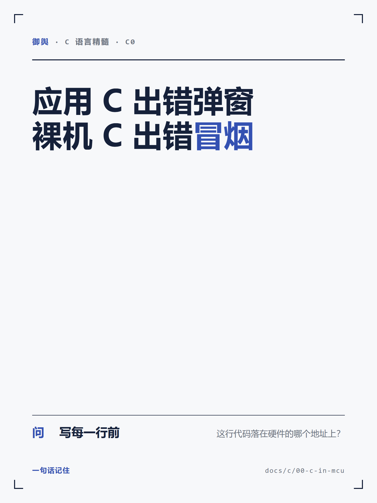
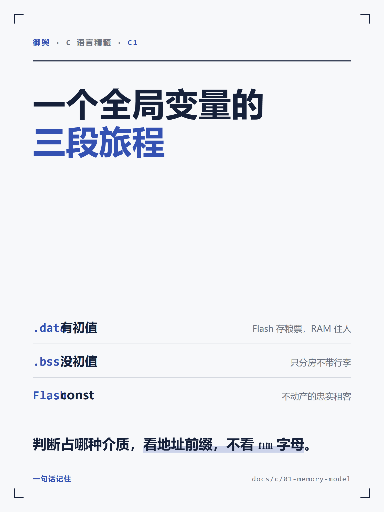
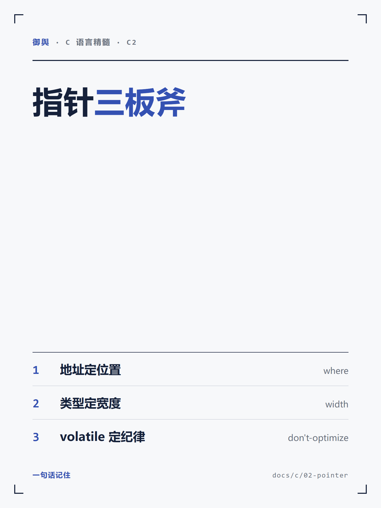
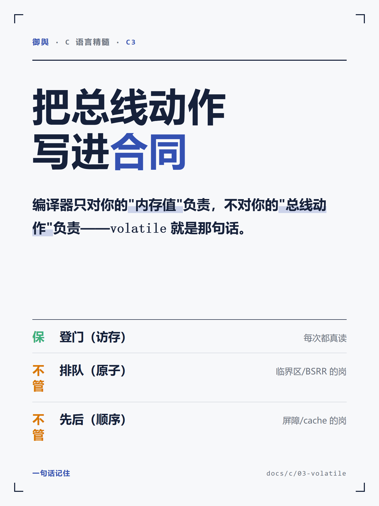
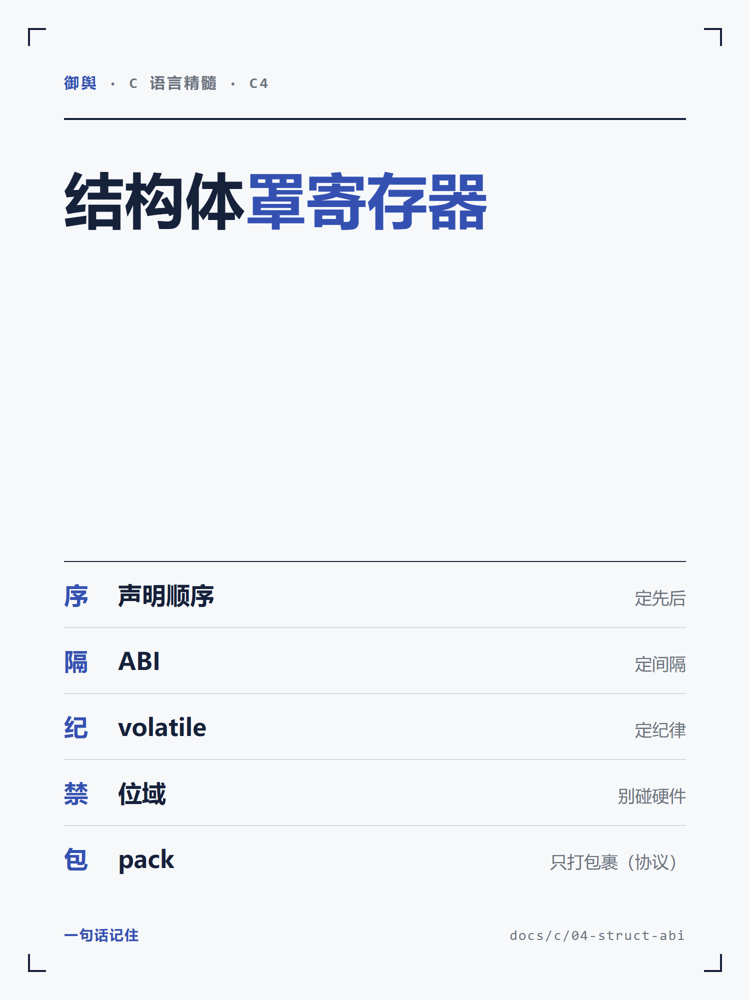
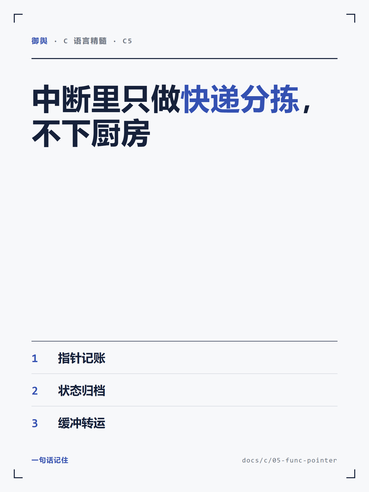
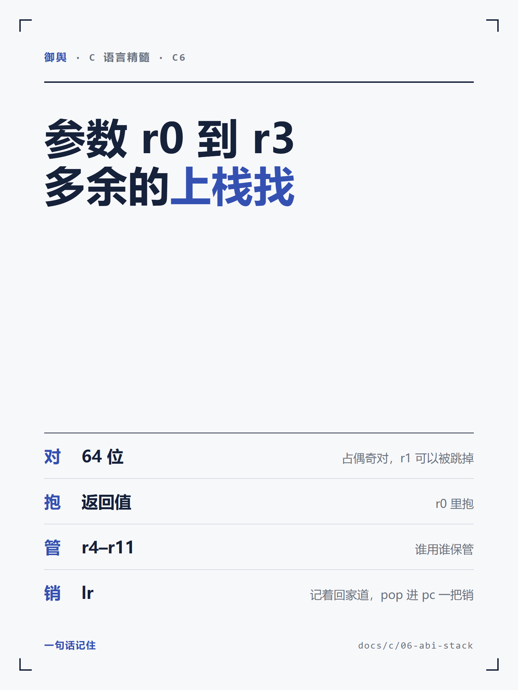
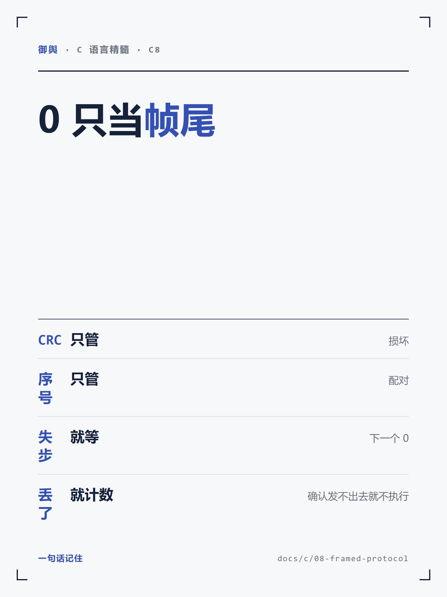
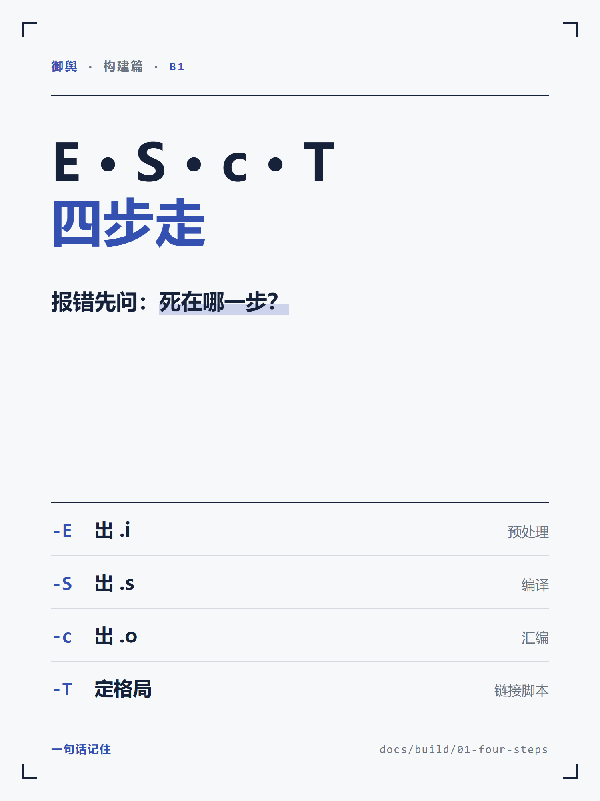
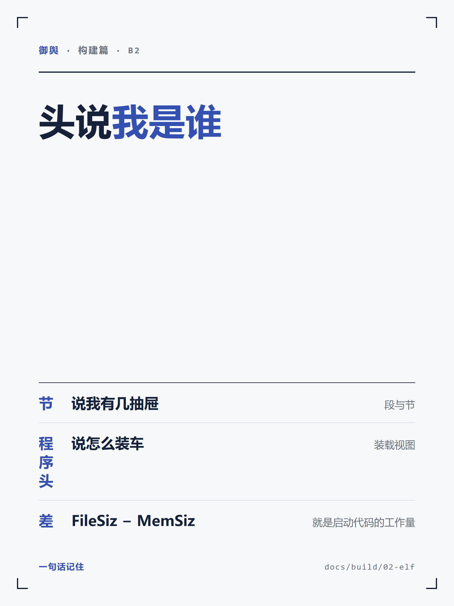
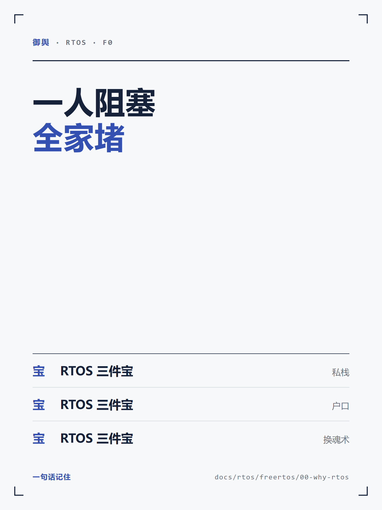
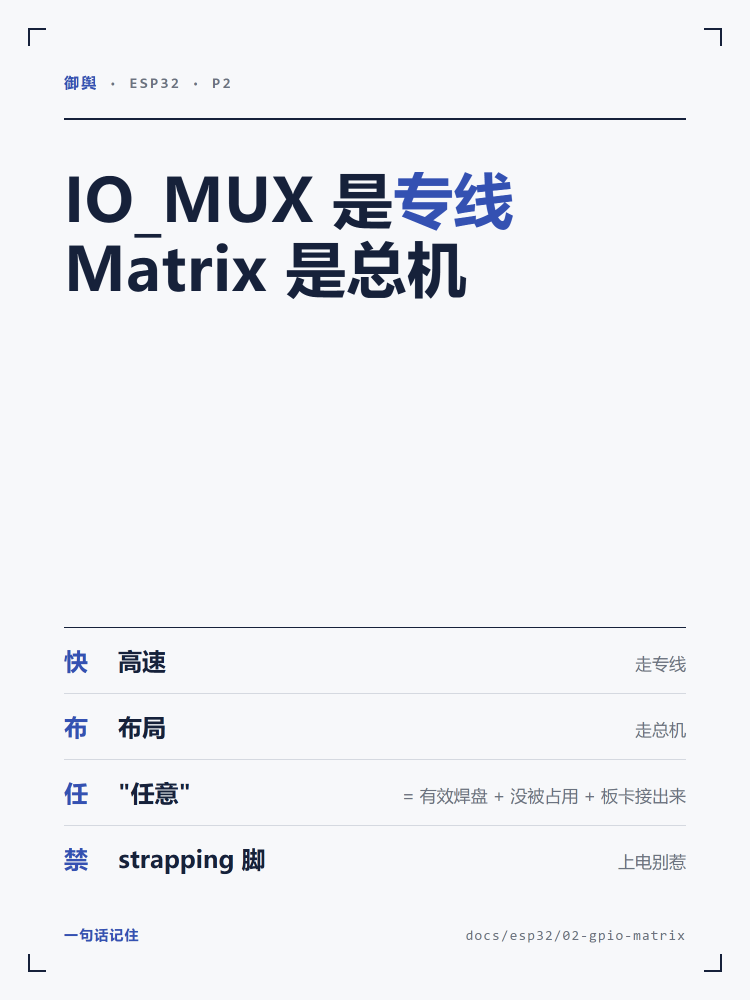
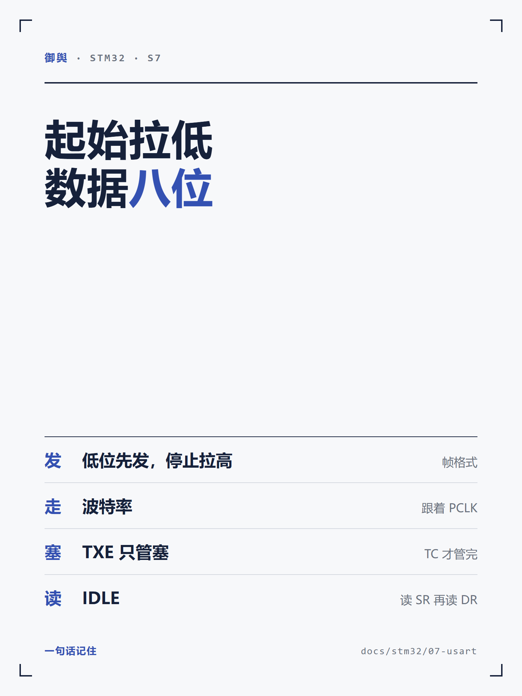

一屏滚完，不用逐个开文件。每张下面标了编号、来源章节、卡面主句——核对只看四件事。
回话方式：直接说「第几张改什么」，或「全过」。全过之后我按你定的平台与存放位置入库正式区。
脚本 .temp/card-fidelity-check.py 把 29 张卡的 HTML 源逐片段拿去对应章节正文找（<br> 与中文标点算断点，markdown 强调符/反引号/空白算排版），结果：
要你拍的板：这些压缩语义都对，只是不像引文。要么 A 放宽口径（主句零改写、小注允许压缩，我把 specs 的声明改成这个说法）；要么 B 逐张改回原句重渲（改 5 张，批 7 那张要重跑生成器）。我倾向 A——卡片不是引文卡，读者看的是能不能一眼记住。
其余 27 张没看到拆行、压角、留白失衡。批 2 的十张源在 .temp/social-cards-2026-11-03/batch/batch.html（一次性手写的，没有生成器），改 HTML 再用同目录 shoot.mjs 重渲即可。












